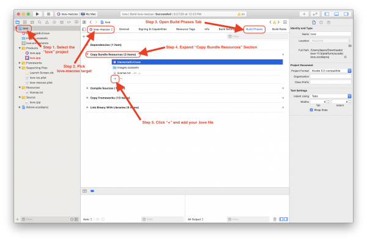

Game Distribution
Once you have completed your game you surely want to make it available to others. In general you should first create a .love-file which can be either directly distributed (which requires users to have LÖVE installed) or used for platform specific packages.
These are the preferred ways to distribute your game depending on target (all make use of the .love file):
- Windows → Windows Executable
- macOS → macOS Application
- Linux → plain .love file, or Appimages
Contents
Create a .love-file
Please note that some operating systems use case-sensitive paths. To avoid unnecessary hassle make sure that the path specifications you use in code matches that of your folders and files.
To create a .love-file you have to create a zip file of the whole game directory. Make sure that your main.lua is in the root of the archive, e.g. if you have
<somedir>\SuperGame\gfx\character.png <somedir>\SuperGame\main.lua <somedir>\SuperGame\conf.lua
then you must ensure the zip file contains
gfx\character.png main.lua conf.lua
and not the directory SuperGame\.
Once you have your zip file you simply rename the ending from .zip to .love and you are done!
If you're using a case-insensitive file system (e.g. Windows), it's advisable to move the .love file to some place other than the folder where your game is, and test again. This will reveal any case sensitivity problems that other users may run into when trying to run your game. If it's run in the same folder, it will find there the files that it can't find in the .love file, so you have to move it before testing. A good place to move it is a folder within your game directory, e.g. love/MyGame.love.
Platform Specific Notes
Windows
Windows supports creation of zip files out of the box via right-click menu. For detailed instructions see Compress and uncompress files (zip files).
macOS
Inside the game folder, select the game files and folders, right-click/Ctrl+click and pick Compress n items. Then rename the resulting .zip file to have a .love ending.
Alternatively, you can use the terminal. Navigate inside the game folder and run:
zip -9 -r SuperGame.love .
Linux
Assuming your current directory is SuperGame/ you can create the .love file from command line directly using
zip -9 -r SuperGame.love .
Creating a Windows Executable
Once you have packed your game into a .love file you can create a game executable that directly runs your game.
For this you have to append your .love file to the love.exe file that comes with the official LÖVE .zip file. The resulting file is your game executable.
Once you have your game executable you can pack it together with all the other DLL files of the official LÖVE .zip file into a new .zip file and share this with the world.
Note: Some people do not have a 64-bit version of Windows, so it is a good idea to either distribute both 32- and 64-bit versions of your game, or only distribute a 32-bit version.
Platform Specific Instructions
Windows
To create your game executable under windows use the command line to run
copy /b love.exe+SuperGame.love SuperGame.exe
Note: You may have to run the command as an administrator on your computer. You can do this by going to Windows\System32 and right clicking on cmd.exe and selecting the option Run as administrator. After this, you must type cd C:\Program Files\LOVE\ (or whatever your default love directory is), then you may continue as normal.
Alternatively you can create a .bat (e.g. create_game_exe.bat) file with the contents
copy /b love.exe+%1 "%~n1.exe"
and then you can simply drag your SuperGame.love file onto the .bat file and it will create the file SuperGame.love.exe which you could then use for distribution.
If you are using PowerShell instead of cmd, then the command used is a little bit different:
cmd /c copy /b love.exe+SuperGame.love SuperGame.exe
This method creates a fused game.
Windows icon
You can use your own icon images using tools like for example the freeware Resource Hacker.
Video tutorial and step-by-step instructions are available.
Linux / OS X
You can create the windows executable from Linux and OS X using the command line.
First download the official zipped 32 or 64 bit executable (not the installer) from https://www.love2d.org/. 32 bit games can run on 64bit Windows systems but not vice versa, so to save time on smaller games, you can provide 32bit only.
Then in the command line/terminal run
cat love.exe SuperGame.love > SuperGame.exe
to obtain the game executable SuperGame.exe.
When distributing the windows executable you will need to include the dll files that came in the folder of the love.exe you used (so don't mix the 32 bit dll's with the 64 bit dll's). Without these files you will get error message when attempting to run SuperGame.exe on a windows machine.
The contents of your final distribution folder should look something like this:
- SDL2.dll
- OpenAL32.dll (note: this file is different in the 64 bit download despite still being called 'OpenAL32.dll')
- SuperGame.exe
- license.txt (note: the license requires that it be included in any further distribution)
- love.dll
- lua51.dll
- mpg123.dll
- msvcp120.dll
- msvcr120.dll
Creating a macOS Application
For official/commercial distribution (e.g., in the Mac App Store) skip to the next section, Official Distribution and the App Store.
Once you have your game prepared as .love file you can make your game available for macOS users by following the steps below (video tutorial available):
- Download and extract the Mac version of LÖVE from the LÖVE homepage
- Rename love.app to SuperGame.app
- Copy your SuperGame.love to SuperGame.app/Contents/Resources/ (right-click/Ctrl+click and pick "Show Package Content" on OS X). This will result in the game running in fused mode.
- Modify SuperGame.app/Contents/Info.plist (see below for details)
- Zip the SuperGame.app folder (e.g. to SuperGame_osx.zip) and distribute it. Enable the -y flag of zip to keep the symlinks.
When modifying SuperGame.app/Contents/Info.plist make sure to change the string values of the following XML-tags:
- CFBundleIdentifier
- CFBundleName
and remove the section UTExportedTypeDeclarations which ensures that macOS does not associate all .love files with your app. Overall the changes should be something like this:
| Original Info.plist | Modified Info.plist |
|---|---|
... <key>CFBundleIdentifier</key> <string>org.love2d.love</string> ... <key>CFBundleName</key> <string>LÖVE</string> ... <key>NSPrincipalClass</key> <string>NSApplication</string> <key>UTExportedTypeDeclarations</key> <array> ... </array> </dict> </plist> |
... <key>CFBundleIdentifier</key> <string>com.SuperCompany.SuperGame</string> ... <key>CFBundleName</key> <string>SuperGame</string> ... <key>NSPrincipalClass</key> <string>NSApplication</string> </dict> </plist> |
Official Distribution and the App Store
Compiling Mac apps requires a Mac running macOS with XCode installed (you can install XCode from the app store).
- Download the love source code
- Download the required frameworks from here and place them in
/Library/Frameworks/. - Open the Xcode project found at
platform/xcode/love.xcodeproj. You will build thelove-macosxtarget as described below. - In XCode, Modify the macOS icons in
Images.xcassets - In XCode, Update the
love-macosx.plist(see instructions above) - Add your .love file to the "Copy Bundle Resources" Build Phase
 - Follow Apple's guide for distributing Mac apps
Distribution for Linux
For Linux there is not yet a simple way to distribute your game. The general approach here is to point to the official LÖVE packages at https://www.love2d.org. Once the package is installed, the .love packages are usually automatically executed using the installed LÖVE package or using the command line:
love SuperGame.love
Make sure to include a conf.lua file with at least the LÖVE version used.
function love.conf(t) t.version = "11.2" end
A common mistake is trying to fuse the love Linux binary with a love file:
cat /usr/bin/love SuperGame.love > SuperGame chmod a+x ./SuperGame
Please keep in mind, while the binary `SuperGame` will run on your machine, and other Linux distros that have the same architecture and similar version libraries, there's a good chance that it will not run on many other Linux distros.
Linux
It has not been yet proven to work in all scenarios, but this a way of distributing your game for Linux.
- Download the appropriate Linux version of love (with file extension .tar.gz), either x86_64, or i686. Download Page
- Extract the .tar.gz. You can do this by either right clicking the file and pressing “extract file”, or extract it via the command line:
tar -xvzf love.tar.gz
- Move your game.love file inside the extracted folder.
- Edit the file called love by replacing "$@" with "${LOVE_LAUNCHER_LOCATION}/game.love”
Debian
There is a policy for including LÖVE games in the Debian archive. It can be followed to create a package for a game even if it is not intended to include it in the archive.
AppImages
The AppImage format is a format for packaging applications in a way that allows them to run on a variety of different target systems (base operating systems, distributions) without further modification. The whole kit can be downloaded from here.
In order to package games using AppImage, the libraries and dependencies required by love need to be gathered, which can be done easily using CARE (available packaged in the Ubuntu repositories) by executing:
care -o love.tar.gz loveThis program makes an archive, which contains the love executable and its dependencies and related files kept in the way of your system. Secondly, the game's .love file needs to be 'fused' by the means shown in the above section. Now, the files need to be placed in the following way in a new directory:
Application Directory/
├── <game name>.desktop --> This file contains path to the program's icon file,
│ the name of the program and the command to execute it.
├── <game name>.png --> Your game's icon
└── usr/
├── bin/ --> Your fused binary needs to be placed here
├── lib/ --> Your libraries need to be placed here
└── share/ --> Your (or LÖVE's) data files (and other things) need to be placed here, if anyFinally, the directory needs to be converted into an AppImage, using AppImageAssistant available in the kit. More information can be found in the AppImage documentation.
Android
Compiling from source
Firstly clone the android LÖVE project:
git clone https://github.com/love2d/love-android
Then, download the Android SDK (API 28) and NDK. For the NDK, r16 and later is known to work. Older version is untested.
Set these environment variables
-
ANDROID_HOMEto your Android SDK location. -
ANDROID_NDK_HOMEto your Android NDK location.
Put the game (game.love) in the directory (project)/app/src/main/assets (if this directory don't exist create it).
For Linux or macOS systems it may be necessary set the executable permission:
chmod +x gradlewAnd finally to generate the apk, do:
./gradlew assembleThe apk will be in (project)/app/build/outputs/apk/
For more information see the Android wiki.
Using APKTool
Please see Game Distribution/APKTool for more information.
iOS
Basic instructions for iOS (without fusing) are available at Getting_Started#iOS.
To fuse your game into the LÖVE engine:
- Get iOS source code from love2d.org.
- Open platform/xcode/love.xcodeproj with Xcode.
- Select love-ios target (not love-macosx)
- Select Build Phases of the 'love-ios' target and add your 'game.love' file into Copy Bundle Resources.
- Build the project.
- Your game should appear on your iOS device as an app.
If you can't find the relevant XCode UI elements, you can refer to video tutorial on YouTube.
Distribution on the web
Publishing as a HTML5 or JavaScript game is possible thanks to TannerRogalsky/love.js. Threads for example are not supported though and playback of course depends on the browser.
Community Tools
There are a few tools developed by the community to help with game distribution.
- love-release (forum), a Lua script that automates game distribution. Supports Windows, macOS, Debian, Linux, with much more features.
- boon (forum), a multi-plateform, easy to use tool supporting Windows, macOS, Linux.
- Love Distrubution Pack[sic], a windows-only tool that can create .love files and exes.
- love-dist, a windows-only tool that can LuaC your files and create an exe.
Other Languages
Dansk –
Deutsch –
English –
Español –
Français –
Indonesia –
Italiano –
Lietuviškai –
Magyar –
Nederlands –
Polski –
Português –
Română –
Slovenský –
Suomi –
Svenska –
Türkçe –
Česky –
Ελληνικά –
Български –
Русский –
Српски –
Українська –
עברית –
ไทย –
日本語 –
正體中文 –
简体中文 –
Tiếng Việt –
한국어
More info